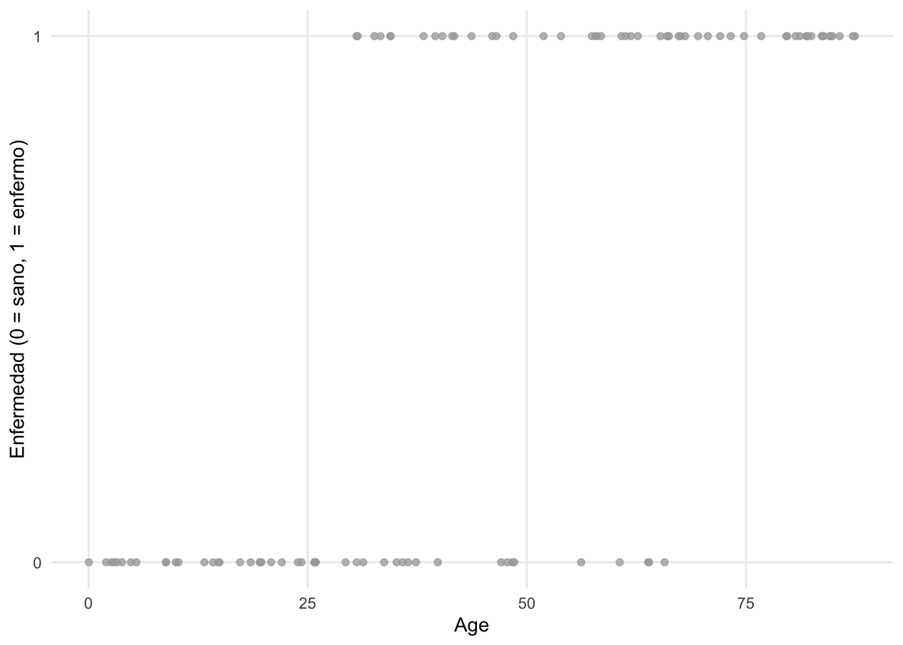
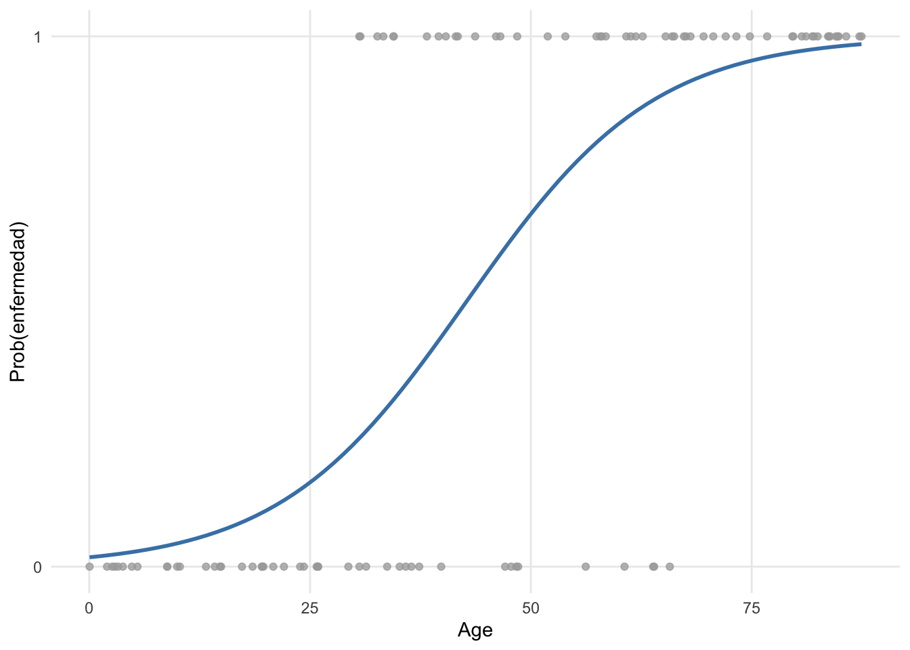
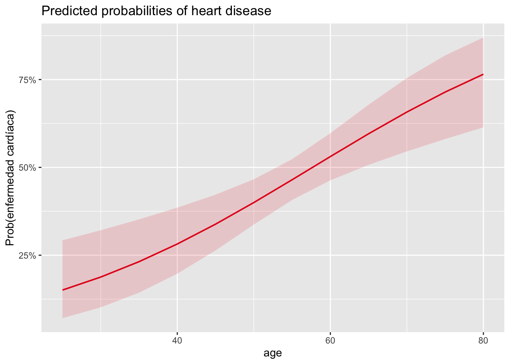
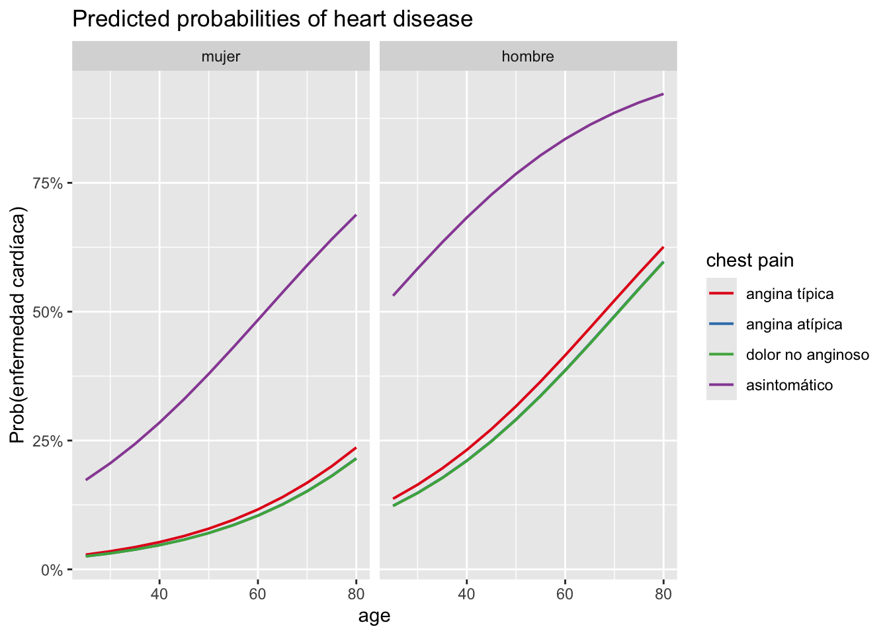
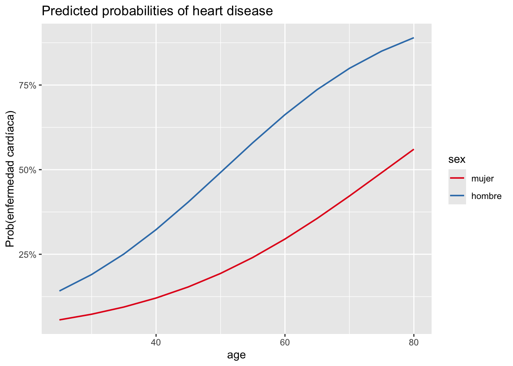
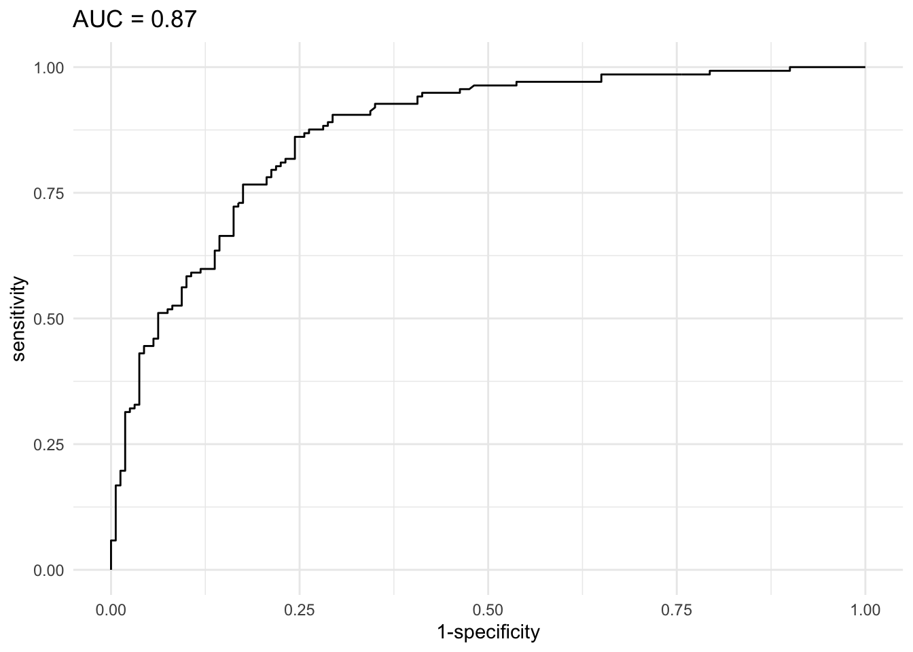
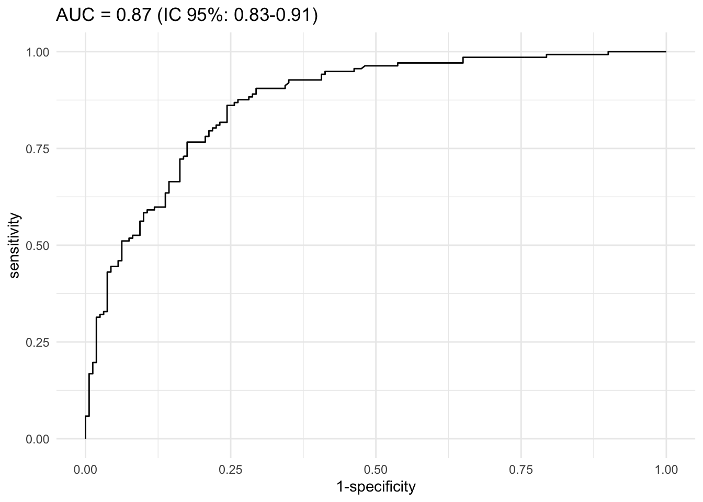
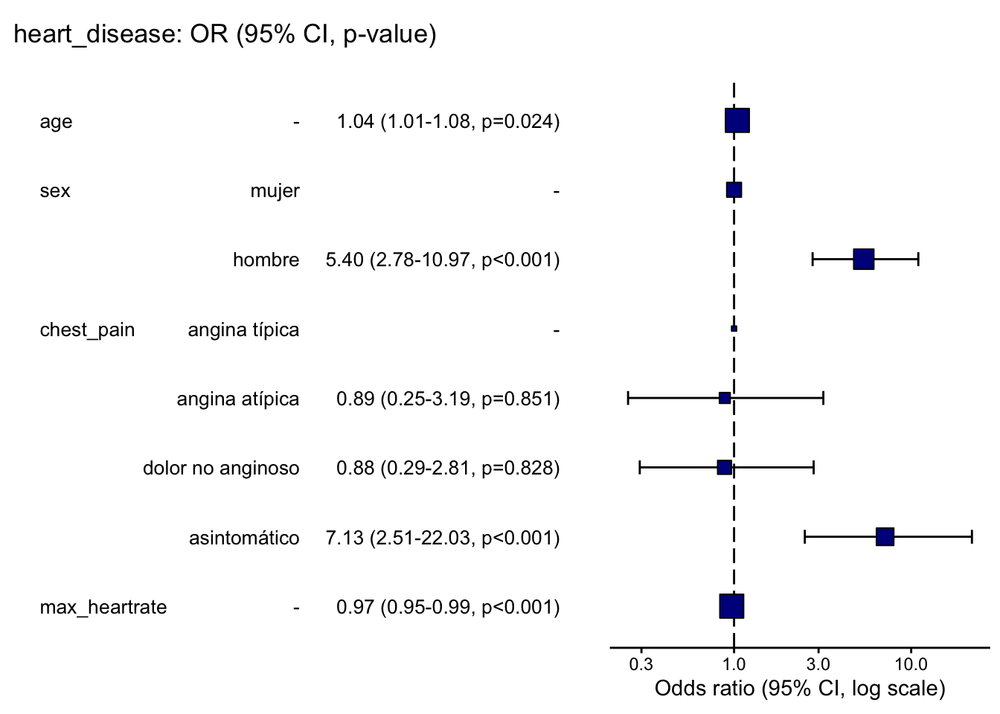

4 TEMA 4: REGRESIÓN LOGISTICA
Cuando hayamos terminado este tema, seremos capaces de:
- Comprender los conceptos básicos de la regresión logística y su aplicación en el análisis de datos médicos.
- Aprender a interpretar los coeficientes de un modelo de regresión logística.
- Desarrollar habilidades para evaluar la calidad y el ajuste de un modelo de regresión logística.4.1 Introducción
La regresión es una herramienta común en estadística para probar y cuantificar relaciones entre variables. Las dos regresiones más comunes son la regresión lineal y la logística. Una regresión lineal se utiliza cuando la variable dependiente es cuantitativa, mientras que una regresión logística se utiliza cuando la variable dependiente es cualitativa, en concreto dicotómica (binaria). Tanto la regresión lineal como la logística se dividen en diferentes tipos. Antes de detallarlos, recapitulemos primero qué tipo de variable puede ser:
- Una variable cuantitativa mide una cantidad; los valores que puede tomar son números. Se divide en:
- Discreta: los valores que puede tomar son contables y tienen un número finito de posibilidades (los valores suelen ser enteros, por ejemplo, el número de hijos).
- Continua: los valores que puede tomar no son contables y tienen un número infinito de posibilidades (los valores suelen tener decimales, o al menos los decimales son técnicamente posibles, por ejemplo, el peso).
- Una variable cualitativa (también conocida como categórica) no es numérica y sus valores se ajustan a categorías. También se divide en dos tipos:
- Nominal: no es posible ni está implícito un orden en las categorías (por ejemplo, el sexo).
- Ordinal: existe un orden implícito en las categorías (por ejemplo, el estado de salud, como malo/regular/bueno).
Una variable binaria, también conocida como dicotómica, es un caso especial de variable cualitativa nominal cuando hay solo dos categorías.
Ahora que los tipos de variables están claros, resumamos los diferentes tipos de regresión:
- Regresión lineal:
- La regresión lineal simple se utiliza cuando el objetivo es estimar la relación entre una variable dependiente cuantitativa continua (también llamada variable de resultado o respuesta) y solo una variable independiente (también llamada variable explicativa, covariable o predictora) de cualquier tipo.
- La regresión lineal múltiple se utiliza cuando el objetivo es estimar la relación entre una variable dependiente cuantitativa continua y dos o más variables independientes (de nuevo, de cualquier tipo).
- Regresión logística: - La regresión logística binaria se utiliza cuando el objetivo es estimar la relación entre una variable dependiente binaria (= dos resultados) y una o más variables independientes (de cualquier tipo).
- La regresión logística multinomial se utiliza cuando el objetivo es estimar la relación entre una variable dependiente nominal con tres o más resultados no ordenados y una o más variables independientes (de cualquier tipo). - La regresión logística ordinal se utiliza cuando el objetivo es estimar la relación entre una variable dependiente ordinal con tres o más resultados ordenados y una o más variables independientes (de cualquier tipo).
Ten en cuenta que existe otro tipo de regresión: la regresión de Poisson. Este tipo de regresión se utiliza cuando el objetivo es estimar la relación entre una variable dependiente que está en forma de datos de conteo (número de ocurrencias de un evento de interés durante un período de tiempo o espacio determinado, por ejemplo, \(0, 1, 2, \ldots\)) y una o más variables independientes.
Las regresiones logísticas y de Poisson forman parte de un tipo más amplio de modelo llamado modelos lineales generalizados (abreviado como GLM). El nombre “modelos lineales generalizados” proviene del hecho de que estos modelos permiten “generalizar” el modelo lineal clásico. De hecho, se pueden utilizar en muchas situaciones, por ejemplo, al analizar una variable dependiente que no es necesariamente cuantitativa continua o cuando los residuos no se distribuyen normalmente (que son requisitos previos para un modelo lineal). El libro An Introduction to Categorical Data Analysis es una excelente introducción del análisis de datos categóricos, incluidas las regresiones logísticas y de Poisson [1]. Otro referente es el libro Regression Methods in Biostatistics: Linear, Logistic, Survival, and Repeated Measures Models [2].
4.2 Regresión lineal versus logística
Sabemos que una regresión lineal es una forma conveniente de estimar la relación entre una variable dependiente cuantitativa continua y una o más variables independientes (de cualquier tipo). Por ejemplo, supongamos que nos gustaría estimar la relación entre dos variables cuantitativas, \(X\) e \(Y\). Usando el método de mínimos cuadrados ordinarios (el estimador más común utilizado en la regresión lineal), obtenemos la siguiente línea de regresión:
Ahora supongamos que estamos interesados en estimar el impacto de la edad en si un paciente tiene o no una determinada enfermedad. La edad se considera una variable cuantitativa continua, mientras que tener la enfermedad es binario (un paciente está enfermo o sano). Visualmente, podríamos tener algo como esto:

Si ajustamos una línea de regresión (utilizando el método de mínimos cuadrados ordinarios) a los puntos, obtenemos el siguiente gráfico:

Vemos que la línea de regresión va por debajo de 0 y por encima de 1 con respecto al eje \(y\). Dado que la variable dependiente enfermedad no puede tomar valores por debajo de 0 (= sano) ni por encima de 1 (= enfermo), ¡es obvio que una regresión lineal no es apropiada para estos datos. Además de esta limitación, los supuestos de normalidad y homocedasticidad, que se requieren en la regresión lineal, claramente no son apropiados con estos datos, ya que la variable dependiente es binaria y sigue una distribución Binomial. R no te impedirá realizar una regresión lineal con datos binarios, pero producirá un modelo de poco interés (incorrectamente especificado con una mala interpretación de la relación entre variables). Aquí es donde una regresión logística se vuelve útil, ya que toma en consideración estas limitaciones [3].
Aplicado a nuestro ejemplo, así es como se ajustan los puntos utilizando una regresión logística binaria:

Está claro que este modelo es más apropiado. La curva (conocida como sigmoide) se obtiene mediante una transformación de los valores predichos. Hay varias opciones posibles para la función de enlace, cuyo objetivo es restringir los valores predichos para que estén dentro del rango de los valores observados. La más utilizada en la práctica es la función logit, que relaciona la probabilidad de ocurrencia de un evento (acotada entre 0 y 1) con la combinación lineal de las variables independientes. La función logit también resulta ser la función de enlace canónica para una distribución de Bernoulli o Binomial. Esta transformación asegura que, sin importar en qué rango se encuentren los valores de \(X\), \(Y\) solo tomará números entre 0 y 1.
Su formula es:
\[logit(\pi) = \log\left(\frac{\pi}{1 - \pi}\right)\]
donde \(\pi\) es la probabilidad de que ocurra un evento (éxito) y se denota como \(\pi = P(éxito)\).
Se podría decir que los valores ajustados (= representados por la curva azul) que toman valores entre 0 y 1 tampoco parecen tener sentido, ya que un paciente solo puede estar sano o enfermo (y, por lo tanto, la variable dependiente solo puede tomar el valor 0 o 1, respectivamente). Sin embargo, en una regresión logística binaria no se modela directamente el resultado de no enfermedad/enfermedad, sino la probabilidad de que un paciente tenga la enfermedad o no, dadas sus características. Esta probabilidad se enmarcará en términos de una probabilidad de observar o no la enfermedad en un paciente, que de hecho está incluida entre 0 y 1, o 0% y 100%.
En general, con una regresión logística nos gustaría modelar cómo varía la probabilidad de éxito con las variables independientes y determinar si estos cambios son estadísticamente significativos o no. En realidad, vamos a modelar el logaritmo de los odds, y el modelo de regresión logística se escribirá de la siguiente manera:
\[\begin{align} \log(odds(éxito)) &= logit(\pi) \\ &= \log\left(\frac{\pi}{1 - \pi}\right) \\ &= \beta_0 + \beta_1 X_1 + \cdots + \beta_p X_p \end{align}\]
donde \(\pi\) \((0 \le \pi \le 1)\) es la probabilidad de que ocurra un evento (éxito) y se denota como \(\pi = P(éxito)\). Encontramos los valores de \(\hat{\beta}_0\), \(\hat{\beta}_1\), \(\ldots\), \(\hat{\beta}_p\), que se utilizan como estimaciones para \(\beta_0\), \(\beta_1\), \(\ldots\), \(\beta_p\), utilizando el método de máxima verosimilitud. Este método es uno de los varios métodos utilizados en estadística para estimar los parámetros de un modelo matemático. El objetivo del estimador es estimar los parámetros \(\beta_0\), \(\beta_1\), \(\ldots\), \(\beta_p\) que maximizan la función de log-verosimilitud. Las regresiones logísticas son muy comunes en el campo de la medicina, por ejemplo, para:
- Estimar los factores de riesgo asociados con una enfermedad o una condición dañina.
- Predecir el riesgo de desarrollar una enfermedad basándose en las características de un paciente.
- Determinar los factores biológicos más importantes asociados con una enfermedad o condición específica.
Sin embargo, las regresiones logísticas se utilizan en muchos otros dominios, por ejemplo, en:
- Sector bancario: estimar la solvencia de un deudor basándose en su perfil (ingresos, activos, pasivos, etc.).
- Marketing: estimar la propensión de un cliente a comprar un producto o servicio basándose en su perfil (edad, sexo, salario, compras anteriores, etc.).
- Deportes: estimar la probabilidad de que un jugador gane contra otro jugador en función de las características de los dos oponentes.
- Política: responder a la pregunta “¿Votaría un ciudadano por nuestro partido político en las próximas elecciones?”.
- Etc.
4.3 Breve introducción al método de estimación de máxima verosimilitud
El método de máxima verosimilitud es un enfoque estadístico utilizado para estimar los parámetros de un modelo matemático. La idea principal detrás de este método es encontrar los valores de los parámetros que maximizan la función de verosimilitud, que mide qué tan probable es observar los datos dados los parámetros del modelo. En el contexto de la regresión logística, el método de máxima verosimilitud se utiliza para estimar los coeficientes del modelo (\(\beta_0\), \(\beta_1\), …, \(\beta_p\)) que describen la relación entre las variables independientes y la variable dependiente binaria. La función de verosimilitud se define como la probabilidad conjunta de observar los datos dados los parámetros del modelo. La función de verosimilitud para la regresión logística se expresa como:
\[L(\beta_0, \beta_1, \ldots, \beta_p) = \prod_{i=1}^{n} P(Y_i | X_i; \beta_0, \beta_1, \ldots, \beta_p)\]
donde \(P(Y_i | X_i; \beta_0, \beta_1, \ldots, \beta_p)\) es la probabilidad condicional de observar el valor \(Y_i\) dado el vector de variables independientes \(X_i\) y los parámetros del modelo.
Para facilitar el proceso de maximización, se suele trabajar con la función de log-verosimilitud, que es el logaritmo natural de la función de verosimilitud:
\[\ell(\beta_0, \beta_1, \ldots, \beta_p) = \log L(\beta_0, \beta_1, \ldots, \beta_p) = \sum_{i=1}^{n} \log P(Y_i | X_i; \beta_0, \beta_1, \ldots, \beta_p)\]
El objetivo del método de máxima verosimilitud es encontrar los valores de los parámetros (\(\hat{\beta}_0\), \(\hat{\beta}_1\), …, \(\hat{\beta}_p\)) que maximizan la función de log-verosimilitud. Esto se logra resolviendo el siguiente problema de optimización:
\[\hat{\beta}_0, \hat{\beta}_1, \ldots, \hat{\beta}_p = \arg\max_{\beta_0, \beta_1, \ldots, \beta_p} \ell(\beta_0, \beta_1, \ldots, \beta_p)\] Para el modelo de regresión logística, la función de log-verosimilitud para la regresión logística binaria se puede expresar como: \[\ell(\beta_0, \beta_1, \ldots, \beta_p) = \sum_{i=1}^{n} \left[ Y_i \log(\pi_i) + (1 - Y_i) \log(1 - \pi_i) \right]\] donde \(\pi_i\) es la probabilidad predicha de que \(Y_i = 1\) dado el vector de variables independientes \(X_i\) y los parámetros del modelo, y se calcula como:
\[\pi_i = \frac{1}{1 + e^{-(\beta_0 + \beta_1 X_{i1} + \ldots + \beta_p X_{ip})}}\] Notese que la función de log-verosimilitud es una suma de términos que dependen de los valores observados de la variable dependiente \(Y_i\) y las probabilidades predichas \(\pi_i\). El primer término, \(Y_i \log(\pi_i)\), contribuye a la función de log-verosimilitud cuando \(Y_i = 1\), mientras que el segundo término, \((1 - Y_i) \log(1 - \pi_i)\), contribuye cuando \(Y_i = 0\). Esta formula se deriva de la distribución Bernoulli de la variable dependiente en la regresión logística binaria. Asi, la función de log-verosimilitud mide qué tan bien el modelo con los parámetros dados explica los datos observados. La maximización de esta función permite encontrar los valores de los parámetros que mejor explican la relación entre las variables independientes y la variable dependiente binaria. Además la función de log-verosimilitud es más fácil de manejar matemáticamente que la función de verosimilitud original, ya que convierte el producto en una suma, lo que simplifica los cálculos y la optimización.
El método de máxima verosimilitud es ampliamente utilizado en estadística y econometría debido a sus propiedades deseables, como la consistencia y la eficiencia de los estimadores. Sin embargo, es importante tener en cuenta que la maximización de la función de log-verosimilitud puede ser un proceso computacionalmente intensivo, especialmente cuando se trabaja con grandes conjuntos de datos o modelos complejos. En R, la función glm() utiliza el método de máxima verosimilitud para estimar los coeficientes de un modelo de regresión logística. Y se computa de forma iterativa utilizando el algoritmo de Newton-Raphson o el método de Fisher Scoring. El primero es un método numérico para encontrar las raíces de una función, mientras que el segundo es una variante del primero que utiliza la información de la varianza de los datos para mejorar la convergencia. Las raíces de la función de log-verosimilitud corresponden a los valores de los parámetros que maximizan la función, es decir, los estimadores de máxima verosimilitud. Y esto se hace iterativamente hasta que se alcanza la convergencia, es decir, hasta que los cambios en los valores de los parámetros entre iteraciones sucesivas son suficientemente pequeños. Este algoritmo es eficiente y converge rápidamente en la mayoría de los casos, lo que lo hace adecuado para estimar los coeficientes de modelos de regresión logística. Y se describe matematicamente como: \[\beta^{(t+1)} = \beta^{(t)} - H^{-1}(\beta^{(t)}) \nabla \ell(\beta^{(t)})\] donde \(\beta^{(t)}\) es el vector de parámetros en la iteración \(t\), \(\nabla \ell(\beta^{(t)})\) es el gradiente de la función de log-verosimilitud evaluado en \(\beta^{(t)}\), y \(H(\beta^{(t)})\) es la matriz Hessiana de la función de log-verosimilitud evaluada en \(\beta^{(t)}\). El proceso se repite hasta que se alcanza la convergencia. Un ejemplo en R es el siguiente:
# Generar datos
set.seed(42)
n <- 1000
X <- rnorm(n)
logit_pi <- -1 + 0.05 * X
pi <- exp(logit_pi) / (1 + exp(logit_pi))
Y <- rbinom(n, size = 1, prob = pi)
data <- data.frame(X = X, Y = Y)
head(data) X Y
1 1.3709584 1
2 -0.5646982 0
3 0.3631284 0
4 0.6328626 1
5 0.4042683 1
6 -0.1061245 1# ajustar modelo de regresión logística
model <- glm(Y ~ X, data = data, family = "binomial")
# manualmente calcular la función de log-verosimilitud
log_likelihood <- function(params, data) {
beta_0 <- params[1]
beta_1 <- params[2]
X <- data$X
Y <- data$Y
logit_pi <- beta_0 + beta_1 * X
pi <- exp(logit_pi) / (1 + exp(logit_pi))
ll <- sum(Y * log(pi) + (1 - Y) * log(1 - pi))
return(-ll) # devolver el negativo para minimizar
}
# encontrar los valores de beta_0 y beta_1 que maximizan la función de log-verosimilitud
initial_params <- c(0, 0)
optim_result <- optim(initial_params, log_likelihood, data = data)
# mostrar los resultados de optimización
optim_result$par[1] -0.91913376 0.03542776# comparar con los coeficientes del modelo ajustado
coef(model)(Intercept) X
-0.91915123 0.03524851 4.4 Regresión logística univariable versus multivariable
Las regresiones logísticas binarias univariables y luego las regresiones logísticas binarias multivariables. Recuerda que en ambos casos, la variable dependiente debe ser una variable cualitativa con dos resultados (de ahí el nombre de regresión logística binaria). La diferencia entre una regresión logística binaria univariable y multivariable radica en que:
- Para una regresión logística binaria univariable, solo hay una variable independiente.
- Para una regresión logística binaria multivariable, hay dos o más variables independientes.
Es cierto que el término “univariable” puede ser confuso aquí porque hay dos variables en el modelo (es decir, una variable dependiente y una variable independiente). Sin embargo, se llama regresión logística binaria univariable para indicar que solo se considera una variable independiente en el modelo, a diferencia de la regresión logística binaria multivariable, donde se consideran varias variables independientes en el modelo.
Para hacer un paralelismo con la regresión lineal:
- Una regresión logística binaria univariable es el equivalente a una regresión lineal simple.
- Una regresión logística binaria multivariable es el equivalente a una regresión lineal múltiple.
cuando la variable dependiente es binaria en lugar de cuantitativa continua. Esta es la razón por la que una regresión logística binaria univariable a veces se llama regresión logística binaria simple y una regresión logística binaria multivariable a veces se llama regresión logística binaria múltiple.
El número de variables dependientes caracteriza el modelo como univariado o multivariado; univariado se refiere a un modelo con una sola variable dependiente, mientras que multivariado se refiere a un modelo que predice simultáneamente más de una variable dependiente. Por lo general, la intención es diferenciar los modelos en función del número de variables independientes. Esta distinción se hace gracias a los términos univariable y multivariable. Multivariable se refiere a un modelo que relaciona múltiples variables predictoras con una variable dependiente, mientras que univariable se refiere a un modelo que relaciona una única variable independiente con una variable dependiente.
Para estas ilustrar la aplicación del método vamos a utilizar el conjunto de datos “Heart Disease”, disponible en el paquete de R {kmed}. Este data frame consta de 14 variables, de las cuales solo vamos a utilizar 5:
age: edad en añossex: sexo (FALSE = mujer, TRUE = hombre)cp: tipo de dolor torácico (1 = angina típica, 2 = angina atípica, 3 = dolor no anginoso, 4 = asintomático)thalach: frecuencia cardíaca máxima alcanzadaclass: diagnóstico de enfermedad cardíaca (dividido en 4 clases)
# importar y renombrar el conjunto de datos
library(kmed)
dat <- heart
# seleccionar variables
library(dplyr)
dat <- dat |>
select(
age,
sex,
cp,
thalach,
class
)
# imprimir la estructura del conjunto de datos
str(dat)'data.frame': 297 obs. of 5 variables:
$ age : num 63 67 67 37 41 56 62 57 63 53 ...
$ sex : logi TRUE TRUE TRUE TRUE FALSE TRUE ...
$ cp : Factor w/ 4 levels "1","2","3","4": 1 4 4 3 2 2 4 4 4 4 ...
$ thalach: num 150 108 129 187 172 178 160 163 147 155 ...
$ class : int 0 2 1 0 0 0 3 0 2 1 ...
- attr(*, "na.action")= 'omit' Named int [1:6] 88 167 193 267 288 303
..- attr(*, "names")= chr [1:6] "88" "167" "193" "267" ...Ten en cuenta que se utiliza el operador pipe |> y el paquete {dplyr} para seleccionar variables. Consulta más técnicas de manipulación de datos utilizando este paquete si estás interesado. Para mayor legibilidad, renombramos las variables cp, thalach y class con nombres más informativos:
# renombrar variables
dat <- dat |>
rename(
chest_pain = cp,
max_heartrate = thalach,
heart_disease = class
)Para una regresión logística binaria en R, se recomienda que todas las variables cualitativas se transformen en factores. Transformamos las variables sex y chest_pain en factor y establecemos las etiquetas correspondientes:
# recodificar sexo
dat$sex <- factor(dat$sex,
levels = c(FALSE, TRUE),
labels = c("mujer", "hombre")
)
# recodificar dolor_torácico
dat$chest_pain <- factor(dat$chest_pain,
levels = 1:4,
labels = c("angina típica", "angina atípica", "dolor no anginoso", "asintomático")
)La variable dependiente en el ejemplot, heart_disease (nuestra variable dependiente) está actualmente codificada con valores discretos integers que van de 0 a 4. Por lo tanto, primero la clasificamos en 2 clases estableciendo 0 para los valores 0 y 1 para los valores distintos de 0, utilizando la función ifelse():
# recodificar heart_disease en 2 clases
dat$heart_disease <- ifelse(dat$heart_disease == 0,
0,
1
)Luego la transformamos en un factor y establecemos las etiquetas correspondientes utilizando la función factor():
# establecer etiquetas para heart_disease
dat$heart_disease <- factor(dat$heart_disease,
levels = c(0, 1),
labels = c("sin enfermedad", "enfermedad")
)Ten en cuenta el orden de los niveles de tu variable dependiente, ya que tendrá un impacto en las interpretaciones. En R, el primer nivel dado por levels() siempre se toma como el nivel de referencia. En nuestro caso, el primer nivel es la ausencia de la enfermedad y el segundo nivel es la presencia de la enfermedad:
levels(dat$heart_disease)[1] "sin enfermedad" "enfermedad" Esto significa que cuando construyamos los modelos, estimaremos el impacto de la(s) variable(s) independiente(s) en la presencia de la enfermedad. Esta es la razón por la que, para variables dependientes del tipo no/sí, falso/verdadero, ausencia/presencia de una condición, etc., se recomienda establecer el nivel no, falso, ausencia de la condición, etc., como el nivel de referencia. De hecho, suele ser más fácil interpretar el impacto de una variable independiente en la presencia de una condición/enfermedad que lo contrario. Si deseas cambiar el nivel de referencia, esto se puede hacer con la función relevel(). Aquí tienes una vista previa del data frame final y algunas básicas:
# imprimir las primeras 6 observaciones
head(dat) age sex chest_pain max_heartrate heart_disease
1 63 hombre angina típica 150 sin enfermedad
2 67 hombre asintomático 108 enfermedad
3 67 hombre asintomático 129 enfermedad
4 37 hombre dolor no anginoso 187 sin enfermedad
5 41 mujer angina atípica 172 sin enfermedad
6 56 hombre angina atípica 178 sin enfermedad# estadísticas descriptivas básicas
summary(dat) age sex chest_pain max_heartrate
Min. :29.00 mujer : 96 angina típica : 23 Min. : 71.0
1st Qu.:48.00 hombre:201 angina atípica : 49 1st Qu.:133.0
Median :56.00 dolor no anginoso: 83 Median :153.0
Mean :54.54 asintomático :142 Mean :149.6
3rd Qu.:61.00 3rd Qu.:166.0
Max. :77.00 Max. :202.0
heart_disease
sin enfermedad:160
enfermedad :137
El data frame está ahora listo para ser analizado más a fondo a través de regresiones logísticas binarias univariables y multivariables.
4.5 Regresión logística binaria univariable
Como se mencionó anteriormente, comenzamos con una regresión logística binaria univariable, es decir, una regresión logística binaria con una sola variable independiente. En R, se puede realizar una regresión logística binaria con la función glm() y el argumento family = "binomial". Al igual que en la regresión lineal, la fórmula utilizada dentro de la función debe escribirse como variable dependiente ~ variable independiente (¡en este orden!). Mientras que la variable dependiente debe ser categórica con dos niveles, la variable independiente puede ser de cualquier tipo. Sin embargo, las interpretaciones difieren dependiendo de si la variable independiente es cualitativa o cuantitativa. Para ser exhaustivos, ilustramos este tipo de regresión con una variable independiente tanto cuantitativa como cualitativa, comenzando con una variable independiente cuantitativa.
4.5.1 Variable independiente cuantitativa
Supongamos que queremos estimar el impacto de la edad de un paciente en la presencia de una enfermedad cardíaca. En este caso, edad es nuestra variable independiente y enfermedad_cardiaca es nuestra variable dependiente:
# guardar modelo
m1 <- glm(heart_disease ~ age,
data = dat,
family = "binomial"
)Los resultados del modelo se guardan en el objeto m1. De nuevo, al igual que en la regresión lineal, se puede acceder a los resultados gracias a la función summary():
# imprimir resultados
summary(m1)
Call:
glm(formula = heart_disease ~ age, family = "binomial", data = dat)
Coefficients:
Estimate Std. Error z value Pr(>|z|)
(Intercept) -3.05122 0.76862 -3.970 7.2e-05 ***
age 0.05291 0.01382 3.829 0.000128 ***
---
Signif. codes: 0 '***' 0.001 '**' 0.01 '*' 0.05 '.' 0.1 ' ' 1
(Dispersion parameter for binomial family taken to be 1)
Null deviance: 409.95 on 296 degrees of freedom
Residual deviance: 394.25 on 295 degrees of freedom
AIC: 398.25
Number of Fisher Scoring iterations: 4Los resultados más importantes en esta salida se muestran en la tabla después de Coefficients. La parte inferior de la salida resume la distribución de los residuos de devianza. En resumen, los residuos de devianza miden qué tan bien se ajustan las observaciones al modelo. Cuanto más cerca esté el residuo de 0, mejor será el ajuste de la observación. Dentro de la tabla Coefficients, nos centramos en la primera y última columna (las otras dos columnas corresponden al error estándar y al estadístico de prueba, que se utilizan para calcular el valor \(p\)):
- La columna
Estimatecorresponde a los coeficientes \(\hat{\beta}_0\) y \(\hat{\beta}_1\). - La columna
Pr(>|z|)corresponde a los valores \(p\).
R realiza una prueba de hipótesis para cada coeficiente, es decir, \(H_0: \beta_j = 0\) versus \(H_1: \beta_j \neq 0\) para \(j = 0, 1\) a través de la prueba de Wald, e imprime los valores \(p\) en la última columna. Por lo tanto, podemos comparar estos valores \(p\) con el nivel de significancia elegido (generalmente \(\alpha = 0.05\)) para concluir si cada uno de los coeficientes es significativamente diferente de 0 o no. Cuanto menor sea el valor \(p\), mayor será la evidencia de que el coeficiente es diferente de 0. Esto es similar a la regresión lineal. Los coeficientes son un poco más difíciles de interpretar en la regresión logística que en la regresión lineal porque la relación entre las variables dependientes e independientes no es lineal. Interpretemos primero el coeficiente de la edad, \(\hat{\beta}_1\), que es el coeficiente más importante de los dos.
Primero, dado que el valor \(p\) de la prueba sobre el coeficiente para la edad es < 0.05, concluimos que es significativamente diferente de 0, lo que significa que la edad está significativamente asociada con la presencia de una enfermedad cardíaca (al nivel de significancia del 5%). Ten en cuenta que si la prueba no fuera significativa (es decir, el valor \(p \ge \alpha\)), nos abstendríamos de interpretar el coeficiente, ya que significa que, basándonos en los datos disponibles, no podemos concluir que la edad esté asociada con la presencia de una enfermedad cardíaca en la población.
Segundo, recuerda que:
- Cuando \(\beta_1 = 0\), \(X\) e \(Y\) son independientes.
- Cuando \(\beta_1 > 0\), la probabilidad de que \(Y = 1\) aumenta con \(X\).
- Cuando \(\beta_1 < 0\), la probabilidad de que \(Y = 1\) disminuye con \(X\).
En nuestro contexto, tenemos:
- Cuando \(\hat{\beta}_1 = 0\), la probabilidad de desarrollar una enfermedad cardíaca es independiente de la edad.
- Cuando \(\hat{\beta}_1 > 0\), la probabilidad de desarrollar una enfermedad cardíaca aumenta con la edad.
- Cuando \(\hat{\beta}_1 < 0\), la probabilidad de desarrollar una enfermedad cardíaca disminuye con la edad.
Aquí tenemos \(\hat{\beta}_1 =\) 0.053 \(> 0\), por lo que ya sabemos que cuanto mayor es el paciente, más probable es que desarrolle una enfermedad cardíaca. Esto tiene sentido.
Ahora que conocemos la dirección de la relación, nos gustaría cuantificar esta relación. Esto se hace fácilmente gracias a los odds ratios (OR). Los OR se encuentran tomando el exponencial de los coeficientes. En R, el exponencial se calcula gracias a la función exp(). La odds de un evento es la razón entre la probabilidad de que ocurra el evento y la probabilidad de que no ocurra. Por ejemplo, si la probabilidad de que un paciente desarrolle una enfermedad cardíaca es 0.8, entonces la probabilidad de que no desarrolle la enfermedad es 0.2, y los odds de desarrollar la enfermedad son \(0.8 / 0.2 = 4\). Esto significa que los odds a favor de desarrollar una enfermedad cardíaca son 4 a 1. Su formula es: \[odds(éxito) = \frac{P(éxito)}{1 - P(éxito)}.\] La OR es la razón entre dos odds. En nuestro caso, los OR se pueden interpretar como el cambio en los odds de desarrollar una enfermedad cardíaca cuando la edad aumenta en 1 unidad (es decir, 1 año). Matemáticamente, los OR se definen como:
\[OR = \frac{odds(éxito | X + 1)}{odds(éxito | X)}.\]
Los OR se pueden interpretar de la siguiente manera: el OR es el cambio multiplicativo en los odds a favor de \(Y = 1\) cuando \(X\) aumenta en 1 unidad. Aplicado a nuestro contexto, calculamos el OR para la edad calculando \(\exp(\hat{\beta}_1) =\) exp(0.053).
Usando R, esto da:
# OR para la edad
exp(coef(m1)["age"]) age
1.054331 Podríamos tambiém multiplicar este valor por 10 para obtener el porcentaje de aumento en los odds cuando la edad aumenta en 10 años:
# OR para un aumento de 10 años en la edad
exp(coef(m1)["age"] * 10) age
1.697345 Basándonos en este resultado, podemos decir que un año extra de edad aumenta los odds (es decir, la probabilidad) de desarrollar una enfermedad cardíaca en un factor de 1.054. Por lo tanto, los odds de desarrollar una enfermedad cardíaca aumentan en (1.054 - 1) \(\times\) 100 = 5.4% cuando un paciente envejece un año.
Para resumir:
- Cuando el coeficiente \(\hat{\beta}_1 = 0 \Rightarrow\) OR \(= \exp(\hat{\beta}_1) = 1 \Rightarrow P(Y = 1)\) es independiente de \(X \Rightarrow\) no hay relación entre \(X\) e \(Y\).
- Cuando el coeficiente \(\hat{\beta}_1 > 0 \Rightarrow\) OR \(= \exp(\hat{\beta}_1) > 1 \Rightarrow P(Y = 1)\) aumenta con \(X \Rightarrow\) hay una relación positiva entre \(X\) e \(Y\).
- Cuando el coeficiente \(\hat{\beta}_1 < 0 \Rightarrow\) OR \(= \exp(\hat{\beta}_1) < 1 \Rightarrow P(Y = 1)\) disminuye con \(X \Rightarrow\) hay una relación negativa entre \(X\) e \(Y\).
Ahora interpretamos el intercepto \(\hat{\beta}_0\).
Primero, miramos el valor \(p\) de la prueba sobre el intercepto. Siendo este valor \(p\) < 0.05, concluimos que el intercepto es significativamente diferente de 0 (al nivel de significancia del 5%).
Segundo, de manera similar a la regresión lineal, para obtener una interpretación del intercepto, necesitamos encontrar una situación en la que el otro coeficiente, \(\beta_1\), se anule.
En nuestro caso, ocurre cuando un paciente tiene 0 años. Podemos necesitar o no interpretar los resultados en tal situación, y en muchas situaciones la interpretación no tiene sentido, por lo que es más una interpretación hipotética. Sin embargo, de nuevo para ser exhaustivos, mostramos cómo interpretar el intercepto. Ten en cuenta que también es posible centrar la variable numérica para que el intercepto tenga una interpretación más significativa. Para un paciente de 0 años, los odds de desarrollar una enfermedad cardíaca son \(\exp(\hat{\beta}_0) =\) exp(-3.051) = 0.047. Al interpretar un intercepto, a menudo tiene más sentido interpretarlo como la probabilidad de que \(Y = 1\), que se puede calcular de la siguiente manera:
\[\frac{\exp(\hat{\beta}_0)}{1 + \exp(\hat{\beta}_0)}.\]
En nuestro caso, corresponde a la probabilidad de que un paciente de 0 años desarrolle una enfermedad cardíaca, que es igual a:
# prob(enfermedad cardíaca) para edad = 0
exp(coef(m1)[1]) / (1 + exp(coef(m1)[1]))(Intercept)
0.04516478 Esto significa que, si confiamos en nuestro modelo, se espera que un recién nacido desarrolle una enfermedad cardíaca con una probabilidad del 4.52%.
Se puede calcular un intervalo de confianza para cualquiera de los OR utilizando la función confint(). Por ejemplo, un intervalo de confianza del 95% para el OR para la edad:
# IC del 95% para el OR para la edad
exp(confint(m1,
parm = "age"
)) 2.5 % 97.5 %
1.026699 1.083987 Recuerda que al evaluar un OR, el valor nulo es 1, no 0. Un OR de 1 en este estudio significaría que no hay asociación entre la edad y la presencia de enfermedad cardíaca. Si el intervalo de confianza del 95% del OR no incluye el 1, concluimos que existe una asociación significativa entre la edad y la presencia de enfermedad cardíaca. Por el contrario, si incluye el 1, no rechazamos la hipótesis de que no hay asociación entre la edad y la presencia de enfermedad cardíaca.
En nuestro caso, el IC del 95% no incluye el 1, por lo que concluimos, al nivel de significancia del 5%, que existe una asociación significativa entre la edad y la presencia de enfermedad cardíaca.
Notarás que es la misma conclusión que con el valor \(p\). Esto es normal, siempre será así:
- Si el valor \(p\) < 0.05, el 1 no estará incluido en el IC del 95%.
- Si el valor \(p \ge\) 0.05, el 1 estará incluido en el IC del 95%.
Esto significa que puedes elegir si sacas tu conclusión sobre la asociación entre las dos variables basándote en el IC del 95% o en el valor \(p\).
Estimar la relación entre variables es la razón principal para construir modelos. Otro objetivo es predecir la variable dependiente basándose en valores recién observados de la(s) variable(s) independiente(s). Esto se puede hacer con la función predict().
Supongamos que nos gustaría predecir la probabilidad de desarrollar una enfermedad cardíaca para un paciente de 30 años:
# predecir la probabilidad de desarrollar una enfermedad cardíaca
pred <- predict(m1,
newdata = data.frame(age = c(30)),
type = "response"
)
# imprimir la predicción
pred 1
0.1878525 Se predice que un paciente de 30 años tiene un 18.79% de probabilidad de desarrollar una enfermedad cardíaca.
Ten en cuenta que si deseas construir un intervalo de confianza para esta predicción, se puede hacer añadiendo el argumento se = TRUE en la función predict():
# predecir la probabilidad de desarrollar una enfermedad cardíaca
pred <- predict(m1,
newdata = data.frame(age = c(30)),
type = "response",
se = TRUE
)
# imprimir la predicción
pred$fit 1
0.1878525 # intervalo de confianza del 95% para la predicción
lower <- pred$fit - (qnorm(0.975) * pred$se.fit)
upper <- pred$fit + (qnorm(0.975) * pred$se.fit)
c(lower, upper) 1 1
0.07873357 0.29697138 La función plot_model() disponible en el paquete de R {sjPlot} hace un buen trabajo al visualizar los resultados del modelo:
# cargar paquete
library(sjPlot)
# gráfico
plot_model(m1,
type = "pred",
terms = "age"
) +
labs(y = "Prob(enfermedad cardíaca)")
El gráfico muestra la probabilidad de desarrollar una enfermedad cardíaca en función de la edad y confirma los resultados encontrados anteriormente:
- Vemos que la probabilidad de desarrollar una enfermedad cardíaca aumenta con la edad (lo cual era de esperar dado que el OR para el coeficiente de la edad es > 1).
- También vemos que la probabilidad de desarrollar una enfermedad cardíaca para un paciente de 30 años es ligeramente inferior al 20%.
4.5.2 Variable independiente cualitativa
Supongamos ahora que estamos interesados en estimar la relación entre la probabilidad de desarrollar una enfermedad cardíaca y el sexo (que es una variable cualitativa). Recuerda que cuando la variable independiente era cuantitativa, \(\exp(\hat{\beta}_1)\) era el cambio multiplicativo en los odds a favor de \(Y = 1\) cuando \(X\) aumenta en 1 unidad. Siendo \(X\) el sexo, el único aumento de unidad posible es de 0 a 1 (o de 1 a 2 si el sexo se codifica como un factor), por lo que podemos escribir una interpretación en términos de mujer/hombre. De nuevo, ten en cuenta cuál es el orden de los niveles para la variable sexo. En nuestro caso, el nivel mujer viene antes que el nivel hombre:
# niveles para sexo
levels(dat$sex)[1] "mujer" "hombre"Así que es, en efecto, el cambio multiplicativo de los odds tomando como referencia de \(Y = 1\) ** mujer. Si el nivel hombre viniera antes que el nivel mujer en nuestro conjunto por lo tanto \(\exp(\hat{\beta}_1)\) es el cambio multiplicativo de los odds a favor de \(Y = 1\) para hombres versus mujeres**.
En nuestro caso, obtenemos los siguientes resultados:
# guardar modelo
m2 <- glm(heart_disease ~ sex,
data = dat,
family = "binomial"
)
# imprimir resultados
summary(m2)
Call:
glm(formula = heart_disease ~ sex, family = "binomial", data = dat)
Coefficients:
Estimate Std. Error z value Pr(>|z|)
(Intercept) -1.0438 0.2326 -4.488 7.18e-06 ***
sexhombre 1.2737 0.2725 4.674 2.95e-06 ***
---
Signif. codes: 0 '***' 0.001 '**' 0.01 '*' 0.05 '.' 0.1 ' ' 1
(Dispersion parameter for binomial family taken to be 1)
Null deviance: 409.95 on 296 degrees of freedom
Residual deviance: 386.12 on 295 degrees of freedom
AIC: 390.12
Number of Fisher Scoring iterations: 4# OR para sexo
exp(coef(m2)["sexhombre"])sexhombre
3.573933 que se pueden interpretar de la siguiente manera:
- El valor \(p\) de la prueba sobre el coeficiente para el sexo es < 0.05, por lo que concluimos que el sexo está significativamente asociado con la presencia de enfermedad cardíaca (al nivel de significancia del 5%).
- Además, al observar el coeficiente para el sexo, \(\hat{\beta}_1 =\) 1.274, podemos decir que:
- Para los hombres, los odds de desarrollar una enfermedad cardíaca se multiplican por un factor de exp(1.274) = 3.574 en comparación con las mujeres.
- En otras palabras, los odds de desarrollar una enfermedad cardíaca para los hombres son 3.574 veces los odds para las mujeres.
- Esto significa que los odds de desarrollar una enfermedad cardíaca son (3.574 - 1) \(\times\) 100 = 257.4% más altos para los hombres que para las mujeres.
- Finalmente, el OR para el sexo es 3.574, y su IC del 95% es:
# IC del 95% para el OR para el sexo
exp(confint(m2,
parm = "sexhombre"
)) 2.5 % 97.5 %
2.118346 6.183549 - Dado que el IC del 95% no incluye el 1, concluimos, al nivel de significancia del 5%, que existe una asociación significativa entre el sexo y la presencia de enfermedad cardíaca. Esta es la misma conclusión que con el valor $p$.
- Esto significa que los hombres tienen significativamente más probabilidades de desarrollar una enfermedad cardíaca que las mujeres.
- Si el IC del 95% hubiera incluido el 1, no habríamos rechazado la hipótesis de que no hay asociación entre el sexo y la presencia de enfermedad cardíaca.4.6 Regresión logística binaria multivariable
La interpretación de los coeficientes en la regresión logística multivariable es similar a la interpretación en la regresión univariable, excepto que esta vez estima el cambio multiplicativo en los odds a favor de \(Y = 1\) cuando \(X\) aumenta en 1 unidad, mientras que las otras variables independientes permanecen sin cambios. Esto es similar a la regresión lineal múltiple, donde un coeficiente da el cambio esperado de \(Y\) por un aumento de 1 unidad de \(X\), manteniendo constantes todas las demás variables [3].
Las principales ventajas de utilizar una regresión logística multivariable en comparación con una regresión logística univariable son:
- Considerar el efecto simultáneo (en lugar de aislado) de las variables independientes.
- Tener en cuenta posibles efectos de confusión y/o interacción.
- Mejorar las predicciones.
Para esta ilustración, supongamos que nos gustaría estimar la relación entre la enfermedad cardíaca y todas las variables presentes en el data frame, es decir, edad, sexo, tipo de dolor torácico y frecuencia cardíaca máxima alcanzada:
# guardar modelo
m2 <- glm(heart_disease ~ .,
data = dat,
family = "binomial"
)
# imprimir resultados
summary(m2)
Call:
glm(formula = heart_disease ~ ., family = "binomial", data = dat)
Coefficients:
Estimate Std. Error z value Pr(>|z|)
(Intercept) -0.060150 1.962091 -0.031 0.975544
age 0.042814 0.019009 2.252 0.024302 *
sexhombre 1.686330 0.349352 4.827 1.39e-06 ***
chest_painangina atípica -0.120481 0.641396 -0.188 0.851000
chest_paindolor no anginoso -0.124331 0.571093 -0.218 0.827658
chest_painasintomático 1.963723 0.548877 3.578 0.000347 ***
max_heartrate -0.030326 0.007975 -3.802 0.000143 ***
---
Signif. codes: 0 '***' 0.001 '**' 0.01 '*' 0.05 '.' 0.1 ' ' 1
(Dispersion parameter for binomial family taken to be 1)
Null deviance: 409.95 on 296 degrees of freedom
Residual deviance: 275.26 on 290 degrees of freedom
AIC: 289.26
Number of Fisher Scoring iterations: 5Ten en cuenta que la fórmula heart_disease ~ . es un atajo para incluir en el modelo todas las variables presentes en el data frame como variables independientes, excepto heart_disease. Basándonos en los valores \(p\) que se muestran en la última columna de la tabla de coeficientes, concluimos que, a un nivel de significancia del 5%, la edad, el sexo y la frecuencia cardíaca máxima alcanzada están significativamente asociados con la enfermedad cardíaca (valores \(p\) < 0.05).
Para las variables age, sex y max_heartrate, solo hay un valor \(p\). Para la variable chest_pain, se muestran 3 valores \(p\). Esto es normal: al igual que en la regresión lineal cuando se incluye en el modelo una variable categórica con más de dos niveles, se realiza una prueba para cada comparación entre el nivel de referencia y los otros niveles. En nuestro caso, el nivel de referencia para la variable chest_pain es typical angina (angina típica), ya que aparece primero:
levels(dat$chest_pain)[1] "angina típica" "angina atípica" "dolor no anginoso"
[4] "asintomático" Por lo tanto, se realiza una prueba para la comparación entre:
typical anginayatypical angina(angina atípica),typical anginaynon-anginal pain(dolor no anginoso), ytypical anginayasymptomatic(asintomático).
Pero aquí no nos interesa comparar los niveles de la variable de dolor torácico, nos gustaría probar el efecto general del dolor torácico en la enfermedad cardíaca. Para ello, vamos a comparar dos modelos mediante una prueba de razón de verosimilitud (LRT):
- Un modelo que incluye todas las variables de interés y la variable
chest_pain. - El mismo modelo exacto pero que excluye la variable
chest_pain.
El primero se conoce como modelo completo, mientras que el segundo se conoce como modelo reducido.
Comparamos estos dos modelos con la función anova():
# guardar modelo reducido
mod_reduced <- glm(heart_disease ~ age + sex + max_heartrate,
data = dat,
family = "binomial"
)
# comparar modelo reducido con modelo completo
anova(mod_reduced, m2,
test = "LRT"
)Analysis of Deviance Table
Model 1: heart_disease ~ age + sex + max_heartrate
Model 2: heart_disease ~ age + sex + chest_pain + max_heartrate
Resid. Df Resid. Dev Df Deviance Pr(>Chi)
1 293 325.12
2 290 275.26 3 49.86 8.558e-11 ***
---
Signif. codes: 0 '***' 0.001 '**' 0.01 '*' 0.05 '.' 0.1 ' ' 1Observa que el modelo reducido debe ir antes que el modelo completo en la función anova(). La hipótesis nula de esta prueba es que los dos modelos son equivalentes.
A un nivel de significancia del 5% (ver el valor \(p\) a la derecha de la salida de R), rechazamos la hipótesis nula y concluimos que el modelo completo es significativamente mejor que el modelo reducido para explicar la presencia de enfermedad cardíaca. Esto significa que el dolor torácico está significativamente asociado con la enfermedad cardíaca (lo cual era de esperar, ya que la comparación entre typical angina y asymptomatic resultó ser significativa). Hemos identificado que las cuatro variables independientes estaban significativamente asociadas con la presencia de enfermedad cardíaca, podemos interpretar los coeficientes para conocer la dirección de las relaciones y, lo más importante, cuantificar la fuerza de estas relaciones.
Al igual que en la regresión logística binaria univariable, es más fácil interpretar estas relaciones a través de los OR. Pero esta vez, también imprimimos el IC del 95% del OR además del OR (redondeado a 3 decimales) para que podamos ver fácilmente cuáles son significativamente diferentes de 1:
# OR y IC del 95%
round(exp(cbind(OR = coef(m2), confint(m2))), 3) OR 2.5 % 97.5 %
(Intercept) 0.942 0.020 44.353
age 1.044 1.006 1.084
sexhombre 5.400 2.776 10.971
chest_painangina atípica 0.886 0.252 3.191
chest_paindolor no anginoso 0.883 0.293 2.814
chest_painasintomático 7.126 2.509 22.030
max_heartrate 0.970 0.955 0.985A partir de los OR y sus IC del 95% calculados anteriormente, concluimos que:
- Edad: los odds de tener una enfermedad cardíaca se multiplican por un factor de 1.04 por cada aumento de una unidad en la edad, manteniendo todo lo demás constante.
- Sexo: los odds de desarrollar una enfermedad cardíaca para los hombres son 5.4 veces los odds para las mujeres, manteniendo todo lo demás constante.
- Dolor torácico: los odds de desarrollar una enfermedad cardíaca para las personas que sufren de dolor torácico del tipo “asintomático” son 7.13 veces los odds para las personas que sufren de dolor torácico del tipo “angina típica”, manteniendo todo lo demás constante. Nos abstenemos de interpretar las otras comparaciones ya que no son significativas al nivel de significancia del 5% (el 1 está incluido en su IC del 95%).
- Frecuencia cardíaca máxima alcanzada: los odds de tener una enfermedad cardíaca se multiplican por un factor de 0.97 por cada aumento de una unidad en la frecuencia cardíaca máxima alcanzada, manteniendo todo lo demás constante.
- Intercepto: también nos abstenemos de interpretar el intercepto ya que no es significativamente diferente de 0 al nivel de significancia del 5% (el 1 está incluido en el IC del 95%). Recuerda que siempre podemos escribir las interpretaciones en términos del porcentaje de aumento/disminución de los odds con la fórmula \((OR - 1) \times 100\), donde OR corresponde al odds ratio.
Por ejemplo, para la frecuencia cardíaca máxima alcanzada, el OR = 0.97, por lo que la interpretación se convierte en: los odds de desarrollar una enfermedad cardíaca aumentan en (0.97 \(- 1) \times 100 =\) -3% por cada aumento de una unidad en la frecuencia cardíaca máxima alcanzada, lo que equivale a decir que los odds de desarrollar una enfermedad cardíaca disminuyen en 3% por cada aumento de una unidad en la frecuencia cardíaca máxima alcanzada.
Con fines ilustrativos, supongamos ahora que nos gustaría predecir la probabilidad de que un nuevo paciente desarrolle una enfermedad cardíaca. Supongamos que esta paciente es una mujer de 32 años, que sufre de dolor torácico del tipo no anginoso y alcanzó una frecuencia cardíaca máxima de 150. La probabilidad de que desarrolle una enfermedad cardíaca es:
# crear data frame del nuevo paciente
new_patient <- data.frame(
age = 32,
sex = "mujer",
chest_pain = "dolor no anginoso",
max_heartrate = 150
)
# predecir la probabilidad de desarrollar una enfermedad cardíaca e Intervalo de confianza del 95%
pred <- predict(m2,
newdata = new_patient,
type = "response",
se.fit = TRUE
)
# Imprimir la predicción e intervalo
lower <- pred$fit - (qnorm(0.975) * pred$se.fit)
upper <- pred$fit + (qnorm(0.975) * pred$se.fit)
c(pred$fit, lower, upper) 1 1 1
0.033459485 -0.007961903 0.074880872 Si confiamos en nuestro modelo, se predice que la probabilidad de que esta nueva paciente desarrolle una enfermedad cardíaca es del 3.35%. También podemos visualizar los resultados gracias a la función plot_model(), tres efectos al mismo tiempo:
- Efecto de la edad, el sexo y el tipo de dolor torácico en la probabilidad predicha de desarrollar una enfermedad cardíaca.
- Efecto de la frecuencia cardíaca máxima alcanzada, el sexo y el tipo de dolor torácico en la probabilidad predicha de desarrollar una enfermedad cardíaca.
# 1. edad, sexo y dolor torácico sobre la prob. de enfermedad
plot_model(m2,
type = "pred",
terms = c("age", "chest_pain", "sex"),
ci.lvl = NA # eliminar bandas de confianza
) +
labs(y = "Prob(enfermedad cardíaca)")
# 2. frec. cardíaca máx., dolor torácico y sexo sobre la prob. de enfermedad
plot_model(m2,
type = "pred",
terms = c("max_heartrate", "chest_pain", "sex"),
ci.lvl = NA # eliminar bandas de confianza
) +
labs(y = "Prob(enfermedad cardíaca)")
Para mayor claridad en los gráficos, las bandas de confianza se eliminan gracias a ci.lvl = NA.
Estos gráficos confirman los resultados obtenidos anteriormente, es decir:
- Hay una relación positiva entre la edad y la presencia de enfermedad cardíaca.
- Hay una relación negativa entre la frecuencia cardíaca máxima alcanzada y la presencia de enfermedad cardíaca.
- Los odds de desarrollar una enfermedad cardíaca son mayores para los pacientes que sufren de dolor torácico de tipo asintomático y similares para los otros 3 tipos de dolor torácico.
- Los odds de desarrollar una enfermedad cardíaca son mayores para los hombres que para las mujeres.
4.6.1 Interacción
En las secciones anteriores, se omitieron los posibles efectos de interacción. Una interacción ocurre cuando la relación entre una variable independiente y la variable de resultado depende del valor o nivel que toma otra variable independiente. Por el contrario, si la relación entre una variable independiente y la variable dependiente permanece sin cambios sin importar el valor que tome otra variable independiente, no podemos concluir que haya un efecto de interacción. En nuestro caso, habría una interacción si, por ejemplo, la relación entre la edad y la enfermedad cardíaca dependiera del sexo. Habría una interacción, por ejemplo, si la relación entre la edad y la enfermedad cardíaca fuera positiva para las mujeres y negativa para los hombres, o viceversa. O si la relación entre la edad y la enfermedad cardíaca fuera mucho más fuerte o mucho más débil para las mujeres que para los hombres.
Veamos si hay una interacción entre la edad y el sexo y, lo que es más importante, si esta interacción es significativa o no. Para ello, necesitamos construir dos modelos:
- Un modelo que contenga solo los efectos principales, es decir, sin la interacción.
- Un modelo que contenga los efectos principales y la interacción.
# guardar modelo sin interacción
m3 <- glm(heart_disease ~ age + sex,
data = dat,
family = "binomial"
)
# guardar modelo con interacción
m3_inter <- glm(heart_disease ~ age * sex,
data = dat,
family = "binomial"
)
summary(m3_inter)
Call:
glm(formula = heart_disease ~ age * sex, family = "binomial",
data = dat)
Coefficients:
Estimate Std. Error z value Pr(>|z|)
(Intercept) -4.21323 1.61745 -2.605 0.00919 **
age 0.05570 0.02758 2.019 0.04346 *
sexhombre 0.64180 1.88470 0.341 0.73346
age:sexhombre 0.01506 0.03286 0.458 0.64666
---
Signif. codes: 0 '***' 0.001 '**' 0.01 '*' 0.05 '.' 0.1 ' ' 1
(Dispersion parameter for binomial family taken to be 1)
Null deviance: 409.95 on 296 degrees of freedom
Residual deviance: 364.23 on 293 degrees of freedom
AIC: 372.23
Number of Fisher Scoring iterations: 4Primero evaluamos la interacción visualmente a través de la función plot_model():
# gráfico
plot_model(m3_inter,
type = "pred",
terms = c("age", "sex"),
ci.lvl = NA # eliminar bandas de confianza
) +
labs(y = "Prob(enfermedad cardíaca)")
Dado que las dos curvas de las probabilidades predichas son relativamente similares y siguen el mismo patrón, la relación entre la edad y la presencia de enfermedad cardíaca no parece depender del sexo, lo que indica que, de hecho, puede que no haya interacción. Sin embargo, nos gustaría probarlo de manera más formal a través de una prueba estadística.
Para ello, podemos comparar los dos modelos (el que no tiene interacción frente al que sí la tiene) con una prueba de razón de verosimilitud (LRT), utilizando la función anova():
anova(m3, m3_inter,
test = "LRT"
)Analysis of Deviance Table
Model 1: heart_disease ~ age + sex
Model 2: heart_disease ~ age * sex
Resid. Df Resid. Dev Df Deviance Pr(>Chi)
1 294 364.43
2 293 364.23 1 0.20741 0.6488Recuerda que siempre es el modelo reducido como primer argumento en la función anova(), y luego el modelo más complejo como segundo argumento.
La prueba confirma lo que supusimos basándonos en el gráfico: a un nivel de significancia del 5%, no rechazamos la hipótesis nula de que los dos modelos son equivalentes. Dado que la única diferencia entre los dos modelos es que se añade un término de interacción en el modelo completo, no rechazamos la hipótesis de que no hay interacción entre la edad y el sexo (valor \(p\) = 0.649).
Esta conclusión también podría haberse obtenido de manera más simple con la función drop1():
drop1(m3_inter,
test = "LRT"
)Single term deletions
Model:
heart_disease ~ age * sex
Df Deviance AIC LRT Pr(>Chi)
<none> 364.23 372.23
age:sex 1 364.43 370.43 0.20741 0.6488Como puedes ver, esto da el mismo valor \(p\) de 0.649.
En la práctica, una interacción no significativa se elimina del modelo antes de interpretar sus resultados. En nuestro caso, solo permanecerían en el modelo los efectos principales de la edad y el sexo. Esto nos lleva a la selección de modelos, o qué variables deben incluirse en nuestro modelo final. Esto se discute en la siguiente sección.
4.6.2 Selección de modelos
En la práctica, a menudo tenemos varios modelos, que corresponden a las diferentes combinaciones de variables independientes y sus interacciones. Encontrar el mejor modelo no es fácil. En general, la mejor práctica es obtener un modelo final que sea lo más parsimonioso posible, es decir, con la menor cantidad de parámetros posible. Un modelo parsimonioso es más fácil de interpretar y generalizar, y también más potente desde un punto de vista estadístico. Por otro lado, no debe ser demasiado simple para que siga capturando las variaciones o patrones en los datos. En general, aunque más variables suelen ser mejores que una, demasiadas suelen ser peor que unas pocas.
Los dos enfoques más comunes para obtener un modelo final son los siguientes:
- Ajustar el modelo eliminando los efectos principales y sus interacciones que no son significativos con respecto a sus valores \(p\), obtenidos al probar la nulidad de los coeficientes correspondientes mediante una prueba estadística como la prueba de razón de verosimilitud o la prueba de Wald. Si hay varios efectos principales o interacciones que no son significativos, las interacciones deben eliminarse antes de eliminar cualquier efecto principal. Además, se recomienda eliminar las interacciones y las variables independientes una por una (comenzando por la que tiene el valor \(p\) más alto), ya que eliminar una variable o una interacción puede hacer que otra variable o interacción que inicialmente no era significativa se vuelva significativa.
- Ajustar el modelo utilizando el AIC (Criterio de Información de Akaike) o el BIC (Criterio de Información Bayesiano). Estos procedimientos permiten seleccionar el mejor modelo (según el AIC o el BIC) encontrando un equilibrio entre simplicidad y complejidad. Estos procesos de selección suelen conducir a un modelo final con la menor cantidad de parámetros posible, pero que captura la mayor cantidad de información posible de los datos. Ten en cuenta que solo se pueden comparar modelos con la misma variable dependiente utilizando AIC o BIC. Los modelos con diferentes variables dependientes no se pueden comparar utilizando estos criterios.
El primer método requiere que:
- Los supuestos subyacentes sean válidos.
- El tamaño de la muestra sea suficientemente grande.
- Los modelos estén anidados (es decir, el modelo completo incluye al menos todas las variables incluidas en el modelo reducido).
Además, el segundo método se puede utilizar con criterios ampliamente aceptados al seleccionar variables y, lo que es más importante, de una manera completamente autónoma en R.
Por esta razón, el segundo método es recomendado y más utilizado en la práctica.
Este segundo método, conocido como selección por pasos (stepwise), se divide en 3 tipos:
- Selección hacia atrás (backward selection): partimos del modelo más completo (que contiene todas las variables independientes y, por lo general, también sus interacciones), y las interacciones/efectos principales se eliminan en cada paso hasta que el modelo no se puede mejorar.
- Selección hacia adelante (forward selection): partimos del modelo más básico que contiene solo el intercepto, y las variables independientes/interacciones se agregan en cada paso hasta que el modelo no se puede mejorar.
- Selección mixta (mixed selection): aplicamos tanto la selección hacia atrás como la selección hacia adelante para determinar el mejor modelo según el criterio deseado.
Mostramos cómo seleccionar el mejor modelo según el AIC utilizando la selección mixta por pasos, ilustrada con todas las variables presentes en el data frame como variables independientes y todas las posibles interacciones de segundo orden:
# guardar modelo inicial
m4 <- glm(heart_disease ~ (age + sex + chest_pain + max_heartrate)^2,
data = dat,
family = "binomial"
)
# seleccionar el mejor modelo según AIC usando selección mixta
m4_final <- step(m4,
direction = "both", # both = selección mixta
trace = FALSE # no mostrar los pasos intermedios
)
# mostrar resultados del modelo final
summary(m4_final)
Call:
glm(formula = heart_disease ~ age + sex + chest_pain + max_heartrate +
age:max_heartrate, family = "binomial", data = dat)
Coefficients:
Estimate Std. Error z value Pr(>|z|)
(Intercept) 19.4386591 8.1904201 2.373 0.017628 *
age -0.3050017 0.1414986 -2.156 0.031122 *
sexhombre 1.7055353 0.3507149 4.863 1.16e-06 ***
chest_painangina atípica -0.0086463 0.6547573 -0.013 0.989464
chest_paindolor no anginoso -0.0590333 0.5844000 -0.101 0.919538
chest_painasintomático 1.9724490 0.5649516 3.491 0.000481 ***
max_heartrate -0.1605658 0.0540933 -2.968 0.002994 **
age:max_heartrate 0.0023314 0.0009433 2.471 0.013457 *
---
Signif. codes: 0 '***' 0.001 '**' 0.01 '*' 0.05 '.' 0.1 ' ' 1
(Dispersion parameter for binomial family taken to be 1)
Null deviance: 409.95 on 296 degrees of freedom
Residual deviance: 268.60 on 289 degrees of freedom
AIC: 284.6
Number of Fisher Scoring iterations: 5Según el AIC (que es el criterio predeterminado al usar la función step()), el mejor modelo es el que incluye:
age(edad),sex(sexo),chest_pain(dolor torácico),max_heartrate(frecuencia cardíaca máxima), y- la interacción entre
ageymax_heartrate.
Para tu información, también puedes comparar modelos manualmente de forma sencilla utilizando el AIC o el pseudo-\(R^2\) con la función tab_model(), también disponible en el paquete de R {sjPlot}:
tab_model(m2, m3_inter, m4_final,
show.ci = FALSE, # eliminar IC
show.aic = TRUE, # mostrar AIC
p.style = "numeric_stars" # mostrar valores p y estrellas
)| heart disease | heart disease | heart disease | ||||
|---|---|---|---|---|---|---|
| Predictors | Odds Ratios | p | Odds Ratios | p | Odds Ratios | p |
| (Intercept) | 0.94 | 0.976 | 0.01 ** | 0.009 | 276759408.51 * | 0.018 |
| age | 1.04 * | 0.024 | 1.06 * | 0.043 | 0.74 * | 0.031 |
| sex [hombre] | 5.40 *** | <0.001 | 1.90 | 0.733 | 5.50 *** | <0.001 |
| chest pain [angina atípica] |
0.89 | 0.851 | 0.99 | 0.989 | ||
| chest pain [dolor no anginoso] |
0.88 | 0.828 | 0.94 | 0.920 | ||
| chest pain [asintomático] | 7.13 *** | <0.001 | 7.19 *** | <0.001 | ||
| max heartrate | 0.97 *** | <0.001 | 0.85 ** | 0.003 | ||
| age × sex [hombre] | 1.02 | 0.647 | ||||
| age × max heartrate | 1.00 * | 0.013 | ||||
| Observations | 297 | 297 | 297 | |||
| R2 Tjur | 0.393 | 0.144 | 0.409 | |||
| AIC | 289.263 | 372.227 | 284.599 | |||
| * p<0.05 ** p<0.01 *** p<0.001 | ||||||
El pseudo-\(R^2\) es una generalización del coeficiente de determinación \(R^2\) que se usa a menudo en la regresión lineal para juzgar la calidad de un modelo. Al igual que el \(R^2\) en la regresión lineal, el pseudo-\(R^2\) varía de 0 a 1 y puede interpretarse como el porcentaje de la devianza nula explicado por la(s) variable(s) independiente(s). Cuanto mayor sea el pseudo-\(R^2\) y menor el AIC, mejor será el modelo.
Ten en cuenta que existen varios pseudo-\(R^2\), como:
- Razón de verosimilitud \(R^2\_{L}\),
- Cox y Snell \(R^2\_{CS}\),
- Nagelkerke \(R^2\_{N}\),
- McFadden \(R^2\_{McF}\), y
- Tjur \(R^2\_{T}\).
La función tab_model() proporciona el Tjur \(R^2\_{T}\) por defecto.
Basándonos en el AIC y el Tjur \(R^2\_{T}\), el último modelo se considera el mejor entre los 3 considerados.
Ten en cuenta que, aunque un modelo se considere el mejor entre los que has considerado (basado en uno o varios criterios), no significa necesariamente que se ajuste bien a los datos. Existen varios métodos para verificar la calidad de un modelo y comprobar si es apropiado para los datos disponibles. Este es el tema de la siguiente sección.
4.6.3 Calidad de un modelo
Por lo general, el objetivo de construir un modelo es poder predecir, con la mayor precisión posible, la variable de respuesta para nuevos datos. En las siguientes secciones, presentamos algunas medidas para juzgar la calidad de un modelo, comenzando por la más fácil e intuitiva, seguida de dos ampliamente utilizadas en el ámbito médico, y finalmente otras dos métricas comunes en el campo del aprendizaje automático.
4.6.3.1 Precisión (Accuracy)
Una buena forma de juzgar la precisión de un modelo es monitorear su rendimiento con nuevos datos y contar con qué frecuencia predice el resultado correcto. Desafortunadamente, cuando tenemos acceso a nuevos datos, a menudo no conocemos el resultado real y, por lo tanto, no podemos verificar si el modelo hace un buen trabajo al predecir el resultado. El truco es:
- Entrenar el modelo con el data frame inicial.
- Probar el modelo con los mismos datos exactos (como si fuera un data frame completamente diferente para el cual no conocemos el resultado).
- Comparar las predicciones hechas por el modelo con los resultados reales.
Para ilustrar este proceso, tomamos el modelo construido en la sección anterior y lo probamos en el data frame inicial. Además, supongamos que si la probabilidad de que el paciente desarrolle una enfermedad cardíaca es inferior al 50%, consideramos que el resultado predicho es la ausencia de la enfermedad; de lo contrario, el resultado predicho es la presencia de la enfermedad.
# crear un vector de probabilidades predichas
preds <- predict(m4_final,
newdata = select(dat, -heart_disease), # eliminar resultados reales
type = "response"
)
# si la probabilidad < umbral, se considera que el paciente no tiene la enfermedad
preds_outcome <- ifelse(preds < 0.5,
0,
1
)
# transformar predicciones en factor y establecer etiquetas
preds_outcome <- factor(preds_outcome,
levels = c(0, 1),
labels = c("sin enfermedad", "enfermedad")
)
# comparar resultado observado vs. predicho
tab <- table(dat$heart_disease, preds_outcome,
dnn = c("observado", "predicho")
)
# imprimir resultados
tab predicho
observado sin enfermedad enfermedad
sin enfermedad 132 28
enfermedad 33 104De la tabla de contingencia de los resultados predichos y observados, vemos que el modelo:
- Predijo correctamente la ausencia de la enfermedad para 132 pacientes.
- Predijo incorrectamente la presencia de la enfermedad para 28 pacientes.
- Predijo incorrectamente la ausencia de la enfermedad para 33 pacientes.
- Predijo correctamente la presencia de la enfermedad para 104 pacientes.
El porcentaje de predicciones correctas, conocido como precisión (accuracy), es la suma de las predicciones correctas dividida por el número total de predicciones:
accuracy <- sum(diag(tab)) / sum(tab)
accuracy[1] 0.7946128Este modelo tiene una precisión del 79.5%.
Aunque la precisión es la forma más intuitiva y fácil de medir el rendimiento predictivo de un modelo, tiene algunas desventajas, especialmente porque tenemos que elegir un umbral arbitrario más allá del cual clasificamos una nueva observación como 1 o 0. Se puede encontrar una discusión más detallada sobre esto en el blog de Frank Harrell.
En esta ilustración, elegimos el 50% como el umbral a partir del cual se consideraba que un paciente tenía la enfermedad. Sin embargo, ¡podríamos haber elegido otro umbral y los resultados habrían sido diferentes!
4.6.3.2 Sensibilidad y especificidad
Si trabajas en el campo de la medicina, o si tu investigación está relacionada con las ciencias médicas, probablemente ya hayas oído hablar de sensibilidad y especificidad.
La sensibilidad de un clasificador, también conocida como recall, mide la capacidad de un clasificador para detectar la condición cuando la condición está presente. En nuestro caso, es el porcentaje de personas enfermas que son correctamente identificadas como tales. Formalmente, tenemos:
\[ \text{Sensibilidad} = \frac{\text{Verdaderos positivos}}{\text{Verdaderos positivos} + \text{Falsos negativos}},\]
donde los verdaderos positivos son personas correctamente diagnosticadas como enfermas y los falsos negativos son personas incorrectamente diagnosticadas como sanas.
La especificidad de un clasificador mide la capacidad de un clasificador para excluir correctamente la condición cuando la condición está ausente. En nuestro caso, es el porcentaje de personas sanas que son correctamente identificadas como no enfermas. Formalmente, tenemos:
\[\text{Especificidad} = \frac{\text{Verdaderos negativos}}{\text{Verdaderos negativos} + \text{Falsos positivos}},\]
donde los verdaderos negativos son personas correctamente diagnosticadas como sanas y los falsos positivos son personas incorrectamente diagnosticadas como enfermas.
En R, la sensibilidad y la especificidad se pueden calcular de la siguiente manera:
# sensibilidad
sensitivity <- tab[2, 2] / (tab[2, 2] + tab[2, 1])
sensitivity[1] 0.7591241# especificidad
specificity <- tab[1, 1] / (tab[1, 1] + tab[1, 2])
specificity[1] 0.825Con nuestro modelo, obtenemos:
- Sensibilidad = 75.9%, y
- Especificidad = 82.5%.
Cuanto más cerca estén la sensibilidad y la especificidad del 100%, mejor será el modelo. El test de Hosmer y Lemeshow, es otra forma común de evaluar la calidad de un modelo. Este test se basa en la comparación entre los resultados observados y los resultados predichos por el modelo. La hipótesis nula de este test es que no hay diferencia entre los resultados observados y los predichos. A un nivel de significancia del 5%, si el valor \(p\) es menor que 0.05, rechazamos la hipótesis nula y concluimos que el modelo no se ajusta bien a los datos [4]. Por otro lado, si el valor \(p\) es mayor que 0.05, no rechazamos la hipótesis nula y concluimos que el modelo se ajusta bien a los datos. En R, este test se puede realizar fácilmente con la función logitgof() del paquete {generalhoslem}.
# cargar paquete
# install.packages("generalhoslem")
library(generalhoslem)
# realizar test de Hosmer y Lemeshow
logitgof(dat$heart_disease, fitted(m4_final))
Hosmer and Lemeshow test (binary model)
data: dat$heart_disease, fitted(m4_final)
X-squared = 6.7718, df = 8, p-value = 0.5614El valor \(p\) es 0.561. A un nivel de significancia del 5%, no rechazamos la hipótesis nula y concluimos que el modelo se ajusta bien a los datos.
4.6.4 Curva ROC y AUC después de un modelo de regresión logística
Ya hemos visto que cuanto mejor es la calidad del modelo, mejores son las predicciones.
Otra forma común y menos arbitraria de juzgar la calidad de un modelo es calculando el AUC (Área Bajo la Curva) y trazando la curva ROC (Receiver Operating Characteristic).
Esto se puede lograr fácilmente gracias al paquete {pROC}:
# cargar paquete
library(pROC)
# guardar objeto roc
res <- roc(heart_disease ~ fitted(m4_final),
data = dat
)
# trazar curva ROC
ggroc(res, legacy.axes = TRUE)
# imprimir AUC
res$aucArea under the curve: 0.87Como la función ggroc() funciona con capas del paquete {ggplot2}, podemos imprimir el AUC directamente en el título del gráfico de la curva ROC:
# trazar curva ROC con AUC e intervalo de confianza en el título del gráfico
ggroc(res, legacy.axes = TRUE) +
labs(title = paste0("AUC = ", round(res$auc, 2))) +
theme_minimal()
Estas dos métricas de calidad se pueden interpretar de la siguiente manera:
- En el gráfico, cuanto más cerca esté la curva ROC de la esquina superior izquierda, mejor será el modelo.
- Cuanto más cerca esté el AUC de 1, mejor será el modelo.
Basándonos en la curva ROC y el AUC, podemos decir que este modelo es de bueno a muy bueno. Esto significa que el modelo es apropiado para estos datos y que puede ser útil para predecir si un paciente desarrollará o no una enfermedad cardíaca. El intervalo de confianza para la AUC se puede calcular de la siguiente manera:
# IC del 95% para AUC
ci.auc(res)95% CI: 0.8299-0.9101 (DeLong)El IC del 95% para la AUC no incluye el valor 0.5, lo que indica que el modelo es significativamente mejor que un modelo aleatorio al nivel de significancia del 5%. Y este se puede graficar de la siguiente manera:
# trazar curva ROC con AUC e intervalo de confianza en el título del gráfico
ggroc(res, legacy.axes = TRUE) +
labs(title = paste0("AUC = ", round(res$auc, 2), " (IC 95%: ", round(ci.auc(res)[1], 2), "-", round(ci.auc(res)[3], 2), ")")) +
theme_minimal()
4.6.5 Reporte de resultados
Como hemos visto antes, los odds ratios son útiles al reportar los resultados de las regresiones logísticas binarias. Calcular estos odds ratios junto con sus intervalos de confianza no es particularmente difícil. Sin embargo, presentarlos en una tabla para una publicación o un informe puede convertirse rápidamente en una tarea que consume mucho tiempo, en particular si tienes muchos modelos y muchas variables independientes. Afortunadamente, hay dos paquetes que ahorran mucho tiempo y que recomendamos utilizar para reportar los resultados de una regresión logística [5].
El primer paquete, llamado {gtsummary}, es útil para reportar los resultados de una regresión a la vez. El segundo es el paquete {finalfit}. Este paquete es más apropiado si necesitas reportar los resultados de varias regresiones a la vez. Aquí tienes un ejemplo con uno de los modelos construidos anteriormente:
# cargar paquete
# install.packages("gtsummary")
library(gtsummary)
# imprimir tabla de resultados
tbl_regression(m4_final, exponentiate = TRUE)| Characteristic | OR | 95% CI | p-value |
|---|---|---|---|
| age | 0.74 | 0.55, 0.96 | 0.031 |
| sex | |||
| mujer | — | — | |
| hombre | 5.50 | 2.82, 11.2 | <0.001 |
| chest_pain | |||
| angina típica | — | — | |
| angina atípica | 0.99 | 0.27, 3.65 | >0.9 |
| dolor no anginoso | 0.94 | 0.30, 3.07 | >0.9 |
| asintomático | 7.19 | 2.44, 22.8 | <0.001 |
| max_heartrate | 0.85 | 0.76, 0.94 | 0.003 |
| age * max_heartrate | 1.00 | 1.00, 1.00 | 0.013 |
| Abbreviations: CI = Confidence Interval, OR = Odds Ratio | |||
Lo que me gusta de este paquete es su facilidad de uso y el hecho de que todos los resultados están bien formateados en una tabla. Es un muy buen punto de partida cuando necesito crear una tabla para una publicación o un informe, para una regresión a la vez. El paquete {finalfit} permite reportar los odds ratios, sus intervalos de confianza y los valores \(p\) de una manera muy eficiente. Además, es bastante fácil hacerlo para muchas regresiones al mismo tiempo.
Permíteme presentar el paquete reportando los resultados de:
- Todas las regresiones logísticas binarias univariables que son posibles con las variables disponibles en el data frame.
- Una regresión logística binaria multivariable que incluye todas las variables disponibles en el data frame.
- Una regresión logística binaria multivariable que incluye solo algunas de las variables presentes en el data frame.
Comenzamos con todas las posibles regresiones logísticas binarias univariables:
# cargar paquetes
# install.packages("finalfit")
library(tidyverse)
library(gt)
library(finalfit)
# establecer variables dependientes e independientes
dependent <- "heart_disease"
independent <- c("age", "sex", "chest_pain", "max_heartrate")
# guardar resultados de las regresiones logísticas univariables
glmuni <- dat |>
glmuni(dependent, independent) |>
fit2df(
explanatory_name = "Variables",
estimate_name = "OR Crudo",
estimate_suffix = " (IC 95%)"
)
# imprimir resultados
glmuni |>
gt()| Variables | OR Crudo (IC 95%) |
|---|---|
| age | 1.05 (1.03-1.08, p<0.001) |
| sexhombre | 3.57 (2.12-6.18, p<0.001) |
| chest_painangina atípica | 0.51 (0.16-1.66, p=0.255) |
| chest_paindolor no anginoso | 0.63 (0.23-1.86, p=0.384) |
| chest_painasintomático | 6.04 (2.39-16.76, p<0.001) |
| max_heartrate | 0.96 (0.94-0.97, p<0.001) |
Algunas observaciones sobre este código: - Se usa glmuni() porque queremos ejecutar GLM univariables. - Se usa explanatory_name = "Variables" para renombrar la primera columna (por defecto es “explanatory”). - Se usa estimate_name = "OR Crudo" para renombrar la segunda columna e informar al lector que estamos en el caso univariable. En el caso univariable, los OR a menudo se denominan OR crudos porque no están ajustados por los efectos de las otras variables independientes. - Se usa estimate_suffix = " (IC 95%)" para especificar que son los intervalos de confianza del 95% los que están dentro de los paréntesis. - La capa gt() al final del código no es obligatoria. Es solo para que la salida aparezca en una tabla bonita en lugar del formato habitual de las salidas de R. Consulta más información sobre el paquete {gt} en su documentación.
A continuación, cómo reportar los resultados de una regresión logística binaria multivariable que incluye todas las variables:
# guardar resultados del modelo completo
glmmulti_full <- dat |>
glmmulti(dependent, independent) |>
fit2df(
explanatory_name = "Variables",
estimate_name = "OR Ajustado - modelo completo",
)
# imprimir resultados
glmmulti_full |>
gt()| Variables | OR Ajustado - modelo completo |
|---|---|
| age | 1.04 (1.01-1.08, p=0.024) |
| sexhombre | 5.40 (2.78-10.97, p<0.001) |
| chest_painangina atípica | 0.89 (0.25-3.19, p=0.851) |
| chest_paindolor no anginoso | 0.88 (0.29-2.81, p=0.828) |
| chest_painasintomático | 7.13 (2.51-22.03, p<0.001) |
| max_heartrate | 0.97 (0.95-0.99, p<0.001) |
Algunas observaciones sobre este código: - Se usa glmmulti() porque queremos ejecutar GLM multivariables. - Se usa estimate_name = "OR Ajustado - modelo completo" para recordar al lector que estamos en el caso multivariable con todas las variables incluidas. En el caso multivariable, los OR a menudo se denominan OR ajustados porque están ajustados por los efectos de las otras variables independientes.
A continuación, cómo reportar los resultados de una regresión logística binaria multivariable que incluye solo una selección de variables:
# seleccionar las variables a incluir en el modelo final
independent_final <- c("age", "sex", "chest_pain")
# guardar resultados del modelo final
glmmulti_final <- dat |>
glmmulti(dependent, independent_final) |>
fit2df(
explanatory_name = "Variables",
estimate_name = "OR Ajustado - modelo final",
estimate_suffix = " (IC 95%)"
)
# imprimir resultados
glmmulti_final |>
gt()| Variables | OR Ajustado - modelo final (IC 95%) |
|---|---|
| age | 1.07 (1.03-1.11, p<0.001) |
| sexhombre | 5.52 (2.88-11.07, p<0.001) |
| chest_painangina atípica | 0.82 (0.24-2.82, p=0.743) |
| chest_paindolor no anginoso | 0.93 (0.32-2.90, p=0.903) |
| chest_painasintomático | 9.48 (3.47-28.53, p<0.001) |
Ten en cuenta que tienes que seleccionar manualmente las variables (el paquete no elegirá por ti, desafortunadamente). La selección podría hacerse previamente gracias a un procedimiento por pasos, por ejemplo. Ahora la parte más interesante de este paquete:
- ¡Podemos combinar todos estos resultados juntos!
- ¡Además de algunas estadísticas descriptivas para cada nivel de la variable dependiente!
Aquí están todos los resultados combinados y mostrados en una tabla:
# guardar estadísticas descriptivas
summary <- dat |>
summary_factorlist(dependent, independent, fit_id = TRUE)
# guardar resultados de las regresiones
output <- summary |>
finalfit_merge(glmuni) |>
finalfit_merge(glmmulti_full) |>
finalfit_merge(glmmulti_final)
# imprimir todos los resultados
output |>
dplyr::select(-fit_id, -index) |>
dplyr::rename(
Variables = label,
" " = levels
) |>
gt()| Variables | sin enfermedad | enfermedad | OR Crudo (IC 95%) | OR Ajustado - modelo completo | OR Ajustado - modelo final (IC 95%) | |
|---|---|---|---|---|---|---|
| age | Mean (SD) | 52.6 (9.6) | 56.8 (7.9) | 1.05 (1.03-1.08, p<0.001) | 1.04 (1.01-1.08, p=0.024) | 1.07 (1.03-1.11, p<0.001) |
| sex | mujer | 71 (44.4) | 25 (18.2) | - | - | - |
| hombre | 89 (55.6) | 112 (81.8) | 3.57 (2.12-6.18, p<0.001) | 5.40 (2.78-10.97, p<0.001) | 5.52 (2.88-11.07, p<0.001) | |
| chest_pain | angina típica | 16 (10.0) | 7 (5.1) | - | - | - |
| angina atípica | 40 (25.0) | 9 (6.6) | 0.51 (0.16-1.66, p=0.255) | 0.89 (0.25-3.19, p=0.851) | 0.82 (0.24-2.82, p=0.743) | |
| dolor no anginoso | 65 (40.6) | 18 (13.1) | 0.63 (0.23-1.86, p=0.384) | 0.88 (0.29-2.81, p=0.828) | 0.93 (0.32-2.90, p=0.903) | |
| asintomático | 39 (24.4) | 103 (75.2) | 6.04 (2.39-16.76, p<0.001) | 7.13 (2.51-22.03, p<0.001) | 9.48 (3.47-28.53, p<0.001) | |
| max_heartrate | Mean (SD) | 158.6 (19.0) | 139.1 (22.7) | 0.96 (0.94-0.97, p<0.001) | 0.97 (0.95-0.99, p<0.001) | - |
Algunas observaciones sobre este código:
summary_factorlist(dependent, independent, fit_id = TRUE)se usa para calcular las estadísticas descriptivas por grupo de la variable dependiente.finalfit_merge()se usa para fusionar los resultados.dplyr::select(-fit_id, -index)se usa para eliminar columnas innecesarias.dplyr::rename(Variables = label, " " = levels)se usa para renombrar algunas columnas.
Y finalmente, algunas observaciones sobre la tabla resultante:
- La primera columna da el nombre de las variables.
- La segunda columna especifica:
- Para variables cualitativas: los niveles.
- Para variables cuantitativas: que es la media y la desviación estándar (DE) lo que se calculará en las dos columnas siguientes.
- La tercera y cuarta columnas dan las estadísticas descriptivas para cada nivel de la variable dependiente:
- Para variables cualitativas: el número de casos y, entre paréntesis, las frecuencias por columna.
- Para variables cuantitativas: la media y, entre paréntesis, la desviación estándar.
- Las últimas tres columnas dan el OR y, entre paréntesis, el IC del 95% del OR y el valor \(p\) (para el modelo univariable y los dos modelos multivariables, respectivamente).
Para tu comodidad, aquí tienes el código completo para que puedas copiarlo y pegarlo fácilmente en caso de que quieras reproducir el proceso:
# cargar paquetes
library(tidyverse)
library(gt)
library(finalfit)
# establecer variables
dependent <- "heart_disease"
independent <- c("age", "sex", "chest_pain", "max_heartrate")
independent_final <- c("age", "sex", "chest_pain")
# guardar estadísticas descriptivas
summary <- dat |>
summary_factorlist(dependent, independent, fit_id = TRUE)
# guardar resultados de regresiones logísticas univariables
glmuni <- dat |>
glmuni(dependent, independent) |>
fit2df(
explanatory_name = "Variables",
estimate_name = "OR Crudo",
estimate_suffix = " (IC 95%)"
)
# guardar resultados del modelo completo
glmmulti_full <- dat |>
glmmulti(dependent, independent) |>
fit2df(
explanatory_name = "Variables",
estimate_name = "OR Ajustado - modelo completo",
)
# guardar resultados del modelo final
glmmulti_final <- dat |>
glmmulti(dependent, independent_final) |>
fit2df(
explanatory_name = "Variables",
estimate_name = "OR Ajustado - modelo final",
estimate_suffix = " (IC 95%)"
)
# guardar resultados fusionados
output <- summary |>
finalfit_merge(glmuni) |>
finalfit_merge(glmmulti_full) |>
finalfit_merge(glmmulti_final)
# imprimir todos los resultados
output |>
dplyr::select(-fit_id, -index) |>
dplyr::rename(
Variables = label,
" " = levels
) |>
gt()Por último, pero no menos importante, la función or_plot(), también disponible en el paquete {finalfit}, es útil para visualizar todos los odds ratio y sus intervalos de confianza del 95%:
dat |> or_plot(dependent, independent,
table_text_size = 3.5 # reducir tamaño del texto
)
A continuación se explica cómo leer este gráfico:
- Los cuadrados representan el OR, y las líneas sus IC del 95%.
- Cuando el IC del 95% cruza la línea vertical discontinua, significa que el OR no es significativamente diferente de 1 (a un nivel de significancia del 5%). En estos casos, no podemos rechazar la hipótesis de no asociación con la variable dependiente.
- Cuando el IC del 95% no cruza la línea vertical discontinua, significa que el OR es significativamente diferente de 1. En estos casos:
- Si el cuadrado se encuentra a la derecha de la línea vertical discontinua, existe una relación positiva entre el resultado y la variable independiente (conocido como factor de riesgo).
- Si el cuadrado se encuentra a la izquierda de la línea vertical discontinua, existe una relación negativa entre el resultado y la variable independiente (conocido como factor protector).
El gráfico confirma lo que se obtuvo anteriormente:
- La edad es un factor de riesgo para la enfermedad cardíaca.
- La frecuencia cardíaca máxima alcanzada es un factor protector para la enfermedad cardíaca.
- Ser hombre y sufrir de dolor torácico asintomático son ambos factores de riesgo de enfermedad cardíaca.
Ten cuidado de que a veces el cuadrado es demasiado grande para ver las líneas del IC del 95%. Este es el caso de las variables max_heartrate y age. En estos casos, es mejor verificar la significancia del OR gracias a sus IC del 95% o los valores \(p\) impresos entre paréntesis.
Claro, aquí tienes la traducción de las secciones finales.
4.6.6 Condiciones de aplicación
Para que los resultados sean válidos e interpretables, una regresión logística binaria requiere:
- Que la variable dependiente sea binaria.
- Independencia de las observaciones: que no haya mediciones repetidas o datos pareados; de lo contrario, se deben usar modelos lineales generalizados de efectos mixtos (GLMM).
- Linealidad de las variables independientes continuas y el resultado en log-odds: tomemos como ejemplo la edad y la enfermedad cardíaca. Si la enfermedad cardíaca es más o menos frecuente a medida que aumenta la edad, el modelo funcionará bien. Sin embargo, si los niños y los ancianos tienen un alto riesgo de padecer una enfermedad cardíaca, pero los de mediana edad no, entonces la relación no es lineal, o no es monotónica, lo que significa que la respuesta no va solo en una dirección.
- Un tamaño de muestra suficientemente grande (para que los intervalos de confianza y las pruebas de hipótesis sean válidos).
- No multicolinealidad: las variables independientes no deben estar altamente correlacionadas entre sí; de lo contrario, los coeficientes y los OR pueden volverse inestables.
A continuación se explica cómo verificar cada una de ellas:
- Esto es obvio; comprueba si la variable dependiente tiene efectivamente solo dos niveles.
- Esto a menudo no se prueba formalmente, sino que se verifica a través del diseño del experimento.
- Las variables independientes cuantitativas deben tener una relación lineal entre sus log-odds y sus valores observados. Una comprobación visual es suficiente, mira a continuación con la edad, la frecuencia cardíaca máxima alcanzada y el modelo
m2como ejemplo:
# ¿Linealidad con los log-odds?
dat |>
dplyr::select(age, max_heartrate) |>
mutate(log_odds = predict(m2)) |>
pivot_longer(-log_odds) |>
ggplot(aes(log_odds, value)) +
geom_point() +
geom_smooth(method = "lm") +
facet_wrap(~name)
- En la práctica, se recomienda tener al menos 10 veces más eventos que parámetros en el modelo.
- El factor de inflación de la varianza (VIF) es una medida bien conocida de multicolinealidad. Debería estar por debajo de 10 o 5, dependiendo del campo de investigación. El VIF se puede calcular con la función
vif(), disponible en el paquete{car}:
# cargar paquete
library(car)
# calcular VIF para el modelo m3
vif(m2) GVIF Df GVIF^(1/(2*Df))
age 1.205246 1 1.097837
sex 1.155071 1 1.074742
chest_pain 1.113010 3 1.018005
max_heartrate 1.143125 1 1.069170Referencias
1.
Agresti A. An introduction to categorical data analysis. 2nd ed. Hoboken, NJ: Wiley; 2007.
2.
Vittinghoff E, Glidden DV, Shiboski SC, McCulloch CE. Regression methods in biostatistics: Linear, logistic, survival, and repeated measures models. 2nd ed. New York: Springer; 2012.
3.
Menard S. Applied logistic regression analysis. 2nd ed. Thousand Oaks, CA: Sage; 2002.
4.
Hosmer DW, Lemeshow S, Sturdivant RX. Applied logistic regression. 3rd ed. Hoboken, NJ: Wiley; 2013.
5.
Peng CYJ, Lee KL, Ingersoll GM. An introduction to logistic regression analysis and reporting. The Journal of Educational Research. 2002;96(1):3–14.